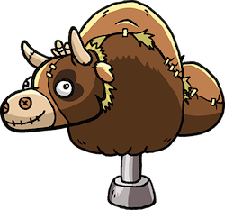

Yeee Haaaww, the Apps are here ya’ll...
Come and Get ’em!!
All the applications you need to feel at home on the range. We have the best pick’ns for your long ganders over the hills and through the woods. They will help with some extra gitty up while your in the saddle.

Happy Cow Tipping Game
Happy Cow Tipping is the Most Fun you can have without being on the Farm… Super Addictive & Challenging Strategy Game for Android Devices that takes slingshot games to a New Level of Entertainment. You will never look at cows the same ever again without giggling inside and wanting to Push Them Over…

Raging Bulls
Hop on up and hang on tight for the ride of a lifetime! Hey there Bull Riders! Take your place amongst PBR greats by showing the world you can tangle with the toughest bulls around. Start your career on the amateur circuit. Win prizes and deck yourself out with even better gear. Sharpen your skills, learn to ride like a pro and work your way all the way to the bright lights of Las Vegas for the PBR World Finals.

Talking Cowboy
This app does much more than talking. Instead of only responding to touch or simply repeating what he hears, you can do much more with this crazy ’ol cowboy: aim your weapon and battle in a duel, play the harmonica or strum the strings of your banjo, make your experience into an entertaining movie, and then show it to the world through YouTube, Facebook, or email!

Farm Ninja
Hop on up and hang on tight for the ride of a lifetime! Hey there Bull Riders! Take your place amongst PBR greats by showing the world you can tangle with the toughest bulls around. Start your career on the amateur circuit. Win prizes and deck yourself out with even better gear. Sharpen your skills, learn to ride like a pro and work your way all the way to the bright lights of Las Vegas for the PBR World Finals.